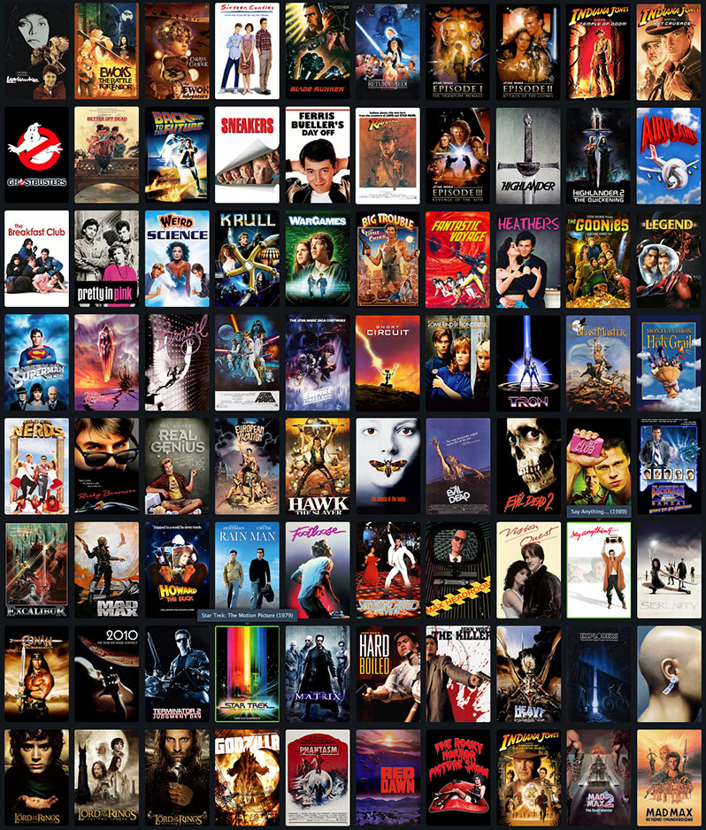

CONTENIDO MULTIMEDIA
El contenido multimedia hace referencia a la combinación de distintos para la comunicación mediante texto, imágenes videos o sonidos con el fin común de transmitir información adaptada a diferentes medios. Ello permite una experiencia enriquecida y envolvente al receptor del mensaje.
El contenido multimedia es una pieza informativa visual o sonora que se utiliza para comunicar un mensaje de forma que genera mayor impacto en el recuerdo e interpretación del mensaje, por parte de la persona que lo recibe. Los contenidos multimedia por lo general están divido en tres elementos: audio, imagen y vídeo.
CATEGORIAS
¿Que es una pelicula?
Una película por definición, es toda obra audiovisual cuya misión es contar historias reales o ficticias y cuyo desarrollo se recrea a través de un trabajo de producción, montaje y postproducción, con el fin de destinar el producto final a la explotación comercial.

Obra audiovisual formada por un conjunto de episodios de ficción, de animación o documentales, con o sin título genérico común, destinada a ser emitida o radiodifundida por operadores de televisión de forma sucesiva y continuada, pudiendo cada episodio corresponder a una unidad narrativa o tener continuación en el episodio siguiente.
El manga es una forma de cómic y novela gráfica originaria de Japón. La palabra manga proviene de dos palabras japonesas: “man”, que significa “caprichoso o improvisado”, y “ga”, que se traduce como “dibujos”. En Japón, el término manga se refiere tanto a los cómics como a los dibujos animados.

El anime se define como un estilo de animación que proviene de Japón. A diferencia de otras formas de animación, el anime presenta características visuales específicas, como grandes ojos expresivos, personajes con estilos de pelo extravagantes y una representación detallada de los gestos y expresiones faciales.